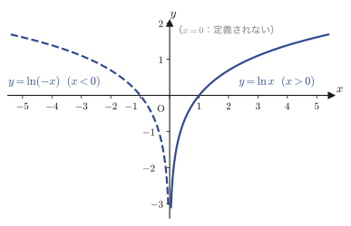
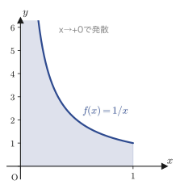
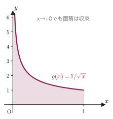
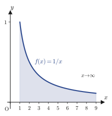
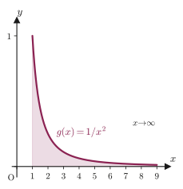
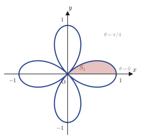
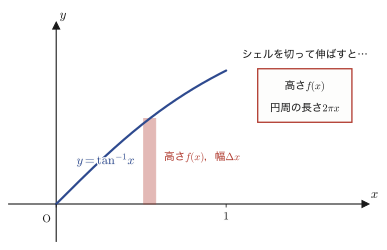
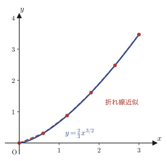

第5章積分の基本公式と定積分の性質
前章では，テイラーの定理を1次近似から作り上げていく途中で，「微分積分学の基本定理」$\displaystyle\int_a^{b} f'(x)\,dx = f(b)-f(a)$ を，高校数学（数学III）で習った事実として断りつきで先取りして使った．そこでは「積分とは微分の逆演算である」というイメージだけを借りて，正式な定義は本章に持ち越したのだった．いよいよここで，積分そのものを主役に据える．
本章の前半（5.1節・5.2節）では，これまでの章で身につけた微分の公式を1つずつ逆向きにたどり，「微分するとこの形になる関数は何か」という問いへの答えを，不定積分の公式集として整理する．これは，ノートの言葉を借りれば「積分は微分の逆」という立場である．しかし，この立場だけでは説明できないことが出てくる——たとえば，$y=x^2$ のグラフと $x$ 軸で囲まれた面積を求めるとき，私たちは本当は「微分の逆演算」を計算しているのではなく，「細い長方形の面積を無数に足し合わせて極限をとる」という，まったく別の操作をしているはずである．この2つの操作（微分の逆演算としての積分と，面積としての積分）が実は一致することは，当たり前ではなく，証明すべき定理である．そこで5.3節では，区分求積法（リーマン和，Riemann sum）による定積分の正式な定義に立ち返り，「面積としての積分」の意味を確定させる．この視点を手に入れると，5.4節で扱う広義積分（improper integral）や無限積分——関数が端点で発散したり，積分区間が無限に伸びていたりする場合の積分——も自然に理解できるようになる．最後に5.5節では，積分を面積・体積・表面積・曲線の長さという具体的な幾何学の問題に応用する．
- 対数・三角関数・指数関数・逆三角関数・双曲線関数について，微分公式を逆にたどって得られる12個の基本的な不定積分公式（$\displaystyle\int\frac1x\,dx=\ln|x|+C$ など）と，その証明（微分して確かめる）
- 定積分の3つの性質：$\displaystyle\int_\alpha^\beta(x-\alpha)(x-\beta)\,dx=-\frac16(\beta-\alpha)^3$（1/6公式），積分の平均値の定理，シュワルツの不等式
- リーマン和 $\displaystyle\sum_{k=1}^n f(t_k)\Delta x_k$ による定積分 $\displaystyle\int_a^b f(x)\,dx$ の正式な定義と，上方和・下方和によるはさみうちの論法
- 広義積分（区間の端で関数が発散する場合）と無限積分（区間が無限に伸びる場合）の定義，およびそれらが収束することも発散することもある具体例
- 極方程式で表された図形の面積 $S=\dfrac12\displaystyle\int r^2\,d\theta$，回転体の体積（円板法・バウムクーヘン法），回転体の表面積，そして曲線の長さの公式とその導出
もとにしたノート：望月泰英『数学ノート 微分積分学』 pp. 39–50．
5.1 基本的な不定積分公式 — 微分の逆をたどる
関数 $F(x)$ を微分すると $f(x)$ になるとき，$F(x)$ を $f(x)$ の原始関数（antiderivative）といい，$F(x)+C$（$C$ は任意の定数．積分定数，constant of integration）の形をまとめて $f(x)$ の不定積分（indefinite integral）とよんで $\displaystyle\int f(x)\,dx=F(x)+C$ と書く．（定数を足しても微分すれば消えるので，「微分して $f(x)$ になる関数」は $F(x)$ 1つには定まらず，$F(x)+C$ の形すべてがそうなる．）この節では，第3章までに求めた微分公式を1つずつ逆にたどり，「微分するとこの形になる関数は何か」に答える．証明の方針はすべて共通していて，ノートの言葉でいうEvidence（根拠）——右辺を微分して，左辺の被積分関数に戻ることを確かめる——である．
5.1.1 対数関数の不定積分 — 絶対値はなぜ必要か
公式5.1
$x\neq0$ のとき，
\begin{equation} \int\frac1x\,dx=\ln|x|+C \label{eq:5-log} \end{equation}証明
$x$ の符号で場合分けする．
(i) $x\gt0$ のとき．第3章で示した対数関数の導関数 $(\ln x)'=\dfrac1x$ より，ただちに $\displaystyle\int\frac1x\,dx=\ln x+C$ である．対数の真数 $x$ はこのとき正なので，何の問題も起きない．
(ii) $x\lt0$ のとき．真数 $x$ が負になってしまうので，$\ln x$ という式自体が実数の範囲では定義されない（対数は正の数に対してしか定義されないことを高校数学で習った）．そこで $x\lt0$ なら $-x\gt0$ であることに着目し，$\ln(-x)$ を微分してみる．$u=-x$ とおいた合成関数の微分（第3章）により，
$$ \{\ln(-x)\}'=\frac{1}{-x}\cdot(-x)'=\frac{1}{-x}\times(-1)=\frac1x $$となる（$u=-x$ の微分は $u'=-1$，これと $(\ln u)'=1/u$ を掛け合わせている）．符号が2回反転して打ち消し合い，結局 $1/x$ に戻ることに注意する．したがって $x\lt0$ では $\displaystyle\int\frac1x\,dx=\ln(-x)+C$ である．
(i)(ii)をまとめる．絶対値の定義 $|x|=x\ (x\ge0)$，$|x|=-x\ (x\lt0)$ を思い出すと，(i)は「$x\gt0$ で原始関数は $\ln x=\ln|x|$」，(ii)は「$x\lt0$ で原始関数は $\ln(-x)=\ln|x|$」と読み替えられる．つまりどちらの場合も原始関数は同じ式 $\ln|x|$ でまとめて書けるから，$\displaystyle\int\frac1x\,dx=\ln|x|+C$（$x\neq0$）が成り立つ．（証明終わり）
イメージ：なぜ絶対値が必要なのか
微分するときは，$x$ が正でも負でも結果はつねに同じ $1/x$ になる．しかし積分するとき（＝原始関数を1つの式で書こうとするとき）は，$x$ が正か負かで使える対数の中身が変わってしまう．図5.1のように，$y=\ln x$（$x\gt0$の部分）のグラフと，それを $y$ 軸に関して折り返した $y=\ln(-x)$（$x\lt0$の部分）のグラフをあわせたものが，$y=\ln|x|$ のグラフである．$x=0$ では定義できない（真数が $0$ になり対数が発散する）ので，$y$ 軸を漸近線とする，左右対称な形になる．絶対値記号は，この「$x\gt0$ 側と $x\lt0$ 側の2枚のグラフを1つの式にまとめる」という役割を果たしている．

数学ノート：公式5.1の一般化
合成関数の微分より，$g(x)\neq0$ である限り $\{\ln|g(x)|\}'=\dfrac{g'(x)}{g(x)}$ が成り立つ（証明は公式5.1と同じ場合分けを $g(x)$ に対して行えばよい）．したがって，
$$ \int\frac{g'(x)}{g(x)}\,dx=\ln|g(x)|+C $$という，分子が分母の導関数になっている形の不定積分もよく現れる．例題5.1でこれを使う．
例題5.1 $\displaystyle\int\frac{x}{x^2+1}\,dx$ を求めよ
解答 $g(x)=x^2+1$ とおくと $g'(x)=2x$ である．分子の $x$ を $\dfrac12\cdot(2x)=\dfrac12 g'(x)$ の形に書き換えると，
$$ \int\frac{x}{x^2+1}\,dx=\frac12\int\frac{2x}{x^2+1}\,dx=\frac12\int\frac{g'(x)}{g(x)}\,dx $$上の数学ノート（公式5.1の一般化）を使うと，
$$ =\frac12\ln|x^2+1|+C $$さらに，任意の実数 $x$ に対して $x^2\ge0$ であるから $x^2+1\ge1\gt0$ となり，絶対値は不要である．よって
$$ \int\frac{x}{x^2+1}\,dx=\frac12\ln(x^2+1)+C $$（sympyで検算：$\displaystyle\int\frac{x}{x^2+1}\,dx=\frac{\ln(x^2+1)}{2}$，一致．）
5.1.2 三角関数の不定積分
公式5.2・公式5.3
\begin{equation} \int\cos x\,dx=\sin x+C, \qquad \int\sin x\,dx=-\cos x+C \label{eq:5-trig} \end{equation}証明（考え方：積分は微分の逆であることを直接使う）
第3章で示した $\dfrac{d}{dx}\sin x=\cos x$ の両辺に $dx$ を掛けると，微分形式の記法（$dy=y'\,dx$）で $d(\sin x)=\cos x\,dx$ と書ける．さらに両辺の先頭に $\int$（インテグラル，integral の記号）をつけると，
$$ \int d(\sin x)=\int\cos x\,dx $$左辺は「$\sin x$ を微分してからまた積分する」という操作なので，不定積分は微分の逆演算だから $\sin x+C$ に戻る．よって $\sin x+C=\displaystyle\int\cos x\,dx$，すなわち $\displaystyle\int\cos x\,dx=\sin x+C$ を得る．
$\sin x$ の場合も同様である．$\dfrac{d}{dx}\cos x=-\sin x$ の両辺に $dx$ を掛けて $d(\cos x)=-\sin x\,dx$ とし，両辺に $\int$ をつけると $\displaystyle\int d(\cos x)=-\int\sin x\,dx$．左辺は $\cos x+C$ に戻るので $\cos x+C=-\displaystyle\int\sin x\,dx$．両辺に $-1$ を掛けると $-\cos x-C=\displaystyle\int\sin x\,dx$ となり（$-C$ もまた任意定数なので改めて $C$ と書き直せば），$\displaystyle\int\sin x\,dx=-\cos x+C$ を得る．（証明終わり）
公式5.4
\begin{equation} \int\frac{1}{\cos^2x}\,dx=\tan x+C \label{eq:5-sec2} \end{equation}証明
第3章の $\dfrac{d}{dx}\tan x=\dfrac{1}{\cos^2x}$ の両辺に $dx$ を掛けて $\int$ をつけると，$\displaystyle\int d(\tan x)=\int\frac{1}{\cos^2x}\,dx$．左辺は $\tan x+C$ に戻るから，$\displaystyle\int\frac{1}{\cos^2x}\,dx=\tan x+C$．（証明終わり）
別解（置換積分） 高校数学既習の恒等式 $1+\tan^2x=\dfrac{1}{\cos^2x}$（$\cos^2x$ で割った三角関数の相互関係）を使うと，$\displaystyle\int\frac{1}{\cos^2x}\,dx=\int(1+\tan^2x)\,dx$ と書き換えられる．ここで $t=\tan x$ とおくと，$\dfrac{1}{\cos^2x}=1+t^2$ であることに注意して，$dt=\dfrac{1}{\cos^2x}\,dx=(1+t^2)\,dx$ が成り立つ．したがって被積分関数 $(1+t^2)\,dx$ はちょうど $dt$ そのものであり，
$$ \int(1+\tan^2x)\,dx=\int dt=t+C=\tan x+C $$となって，同じ結果が得られる．
5.1.3 指数関数の不定積分
公式5.5
$a\gt0,\ a\neq1$ のとき，
\begin{equation} \int a^x\,dx=\frac{a^x}{\ln a}+C \label{eq:5-expa} \end{equation}証明
第3章の $\dfrac{d}{dx}a^x=a^x\ln a$ の両辺に $dx$ を掛けると，$d(a^x)=a^x\ln a\,dx$．両辺を（$a\neq1$ より $\ln a\neq0$ なので）$\ln a$ で割ると，
$$ d\left(\frac{a^x}{\ln a}\right)=a^x\,dx $$（左辺は，定数 $1/\ln a$ を微分の外に出せることから，$d(a^x/\ln a)=\{(a^x/\ln a)\}'dx=\frac{1}{\ln a}(a^x)'dx=\frac{1}{\ln a}a^x\ln a\,dx=a^x dx$ となり確かに一致する．）両辺に $\int$ をつけると，左辺は $\dfrac{a^x}{\ln a}+C$ に戻るので，$\displaystyle\int a^x\,dx=\frac{a^x}{\ln a}+C$ を得る．（証明終わり）
別解（置換積分） $A=a^x$ とおくと，$dA=a^x\ln a\,dx$，すなわち $dx=\dfrac{dA}{a^x\ln a}=\dfrac{dA}{A\ln a}$．よって
$$ \int a^x\,dx=\int A\cdot\frac{dA}{A\ln a}=\int\frac{1}{\ln a}\,dA=\frac{A}{\ln a}+C=\frac{a^x}{\ln a}+C $$となり，同じ結果を得る．（$a=e$ とすれば $\ln e=1$ なので，おなじみの $\displaystyle\int e^x\,dx=e^x+C$ に帰着することも確認できる．）
5.1.4 逆三角関数・双曲線関数の不定積分
ここからは，逆三角関数——$\sin^{-1}x$（逆正弦関数，arcsine．「$\sin y=x$ かつ $-\dfrac{\pi}2\le y\le\dfrac{\pi}2$」を満たす $y$ のこと）や $\tan^{-1}x$（逆正接関数，arctangent．「$\tan y=x$ かつ $-\dfrac{\pi}2\lt y\lt \dfrac{\pi}2$」を満たす $y$ のこと）——と，第2章で学んだ双曲線関数 $\sinh x,\cosh x$ の不定積分を求める．
公式5.6
$-1\lt x\lt 1$ のとき，
\begin{equation} \int\frac{1}{\sqrt{1-x^2}}\,dx=\sin^{-1}x+C \label{eq:5-asin} \end{equation}証明（置換積分：$x=\sin t$）
$x=\sin t\ \left(-\dfrac{\pi}2\le t\le\dfrac{\pi}2\right)$ とおく．このとき $1-x^2=1-\sin^2t=\cos^2t$（三角関数の基本公式 $\sin^2t+\cos^2t=1$ より），また $dx=\cos t\,dt$ である．$\sqrt{\cos^2t}=|\cos t|$（2乗の平方根はもとの数の絶対値になる）であることに注意して，$\cos t$ の符号で場合分けする．
(i) $\cos t\ge0$ のとき（$-\dfrac{\pi}2\le t\le\dfrac{\pi}2$ の範囲ではつねにこちら）．$\sqrt{1-x^2}=|\cos t|=\cos t$ なので，
$$ \int\frac{1}{\sqrt{1-x^2}}\,dx=\int\frac{1}{\cos t}\cdot\cos t\,dt=\int dt=t=\sin^{-1}x $$（最後の等号は，$x=\sin t$ の定義より $t=\sin^{-1}x$ となることから．）
実は $t$ の範囲を $-\dfrac{\pi}2\le t\le\dfrac{\pi}2$ に選んだ時点で $\cos t\ge0$ は保証されているので，場合(ii)（$\cos t\lt0$）は本来起こらない．（ノートには $\cos t\lt0$ の場合も併記され，$\sqrt{1-x^2}=-\cos t$ として計算すると $-t=-\sin^{-1}x$ となるが，これは $t$ の範囲を $\left[\dfrac{\pi}2,\dfrac{3\pi}2\right]$ のようにずらした場合の話であり，$-\sin^{-1}x$ は結局，(i)の $t$ とは符号の違う角を選んだだけで同じ原始関数を与える．置換の際に $t$ の範囲を最初から $\left[-\dfrac{\pi}2,\dfrac{\pi}2\right]$ に固定しておけば，(i)だけで証明は完結する．）（証明終わり）
注意：$\sqrt{\cos^2t}$ の扱いに注意
$\sqrt{1-x^2}=\sqrt{\cos^2t}$ を計算するときは，「2乗の平方根はもとの数の絶対値」という規則（$\sqrt{A^2}=|A|$）を $A=\cos t$ に対して正しく適用し，$\sqrt{\cos^2t}=|\cos t|$ とする．$\cos^2t\ (\ge0)$ 自身に絶対値をつけても $\cos^2t$ のまま変わらないので，「絶対値の中の指数を2乗のまま残して $\cos t$ になる」という考え方には直接結びつかない点に注意する．
公式5.7
\begin{equation} \int\frac{1}{1+x^2}\,dx=\tan^{-1}x+C \label{eq:5-atan} \end{equation}証明（置換積分：$x=\tan\theta$）
$x=\tan\theta\ \left(-\dfrac{\pi}2\lt\theta\lt\dfrac{\pi}2\right)$ とおく．三角関数の相互関係 $1+\tan^2\theta=\dfrac{1}{\cos^2\theta}$ より $1+x^2=\dfrac{1}{\cos^2\theta}$，また $dx=\dfrac{1}{\cos^2\theta}\,d\theta$ である．したがって，
$$ \int\frac{1}{1+x^2}\,dx=\int\cfrac{1}{\dfrac{1}{\cos^2\theta}}\cdot\frac{1}{\cos^2\theta}\,d\theta=\int d\theta=\theta=\tan^{-1}x $$（分数の中の分数を整理すると，$\dfrac{1}{1/\cos^2\theta}\times\dfrac{1}{\cos^2\theta}=\cos^2\theta\times\dfrac{1}{\cos^2\theta}=1$ となって，被積分関数がちょうど $1$ になることに注目する．）（証明終わり）
公式5.8・公式5.9
\begin{equation} \int\sinh x\,dx=\cosh x+C, \qquad \int\cosh x\,dx=\sinh x+C \label{eq:5-hyp} \end{equation}証明
第2章の定義 $\sinh x=\dfrac{e^x-e^{-x}}2$，$\cosh x=\dfrac{e^x+e^{-x}}2$ を使う．
$$ \int\sinh x\,dx=\int\frac12(e^x-e^{-x})\,dx=\frac12\left(e^x-\frac{e^{-x}}{-1}\right)+C=\frac12(e^x+e^{-x})+C=\cosh x+C $$（$\displaystyle\int e^{-x}\,dx=\frac{e^{-x}}{-1}+C=-e^{-x}+C$ を使った．$-(-e^{-x})=e^{-x}$ で符号が反転することに注意．）同様に，
$$ \int\cosh x\,dx=\int\frac12(e^x+e^{-x})\,dx=\frac12(e^x-e^{-x})+C=\sinh x+C $$（証明終わり）
公式5.10・公式5.11
$a\gt0$ のとき，
\begin{equation} \int\frac{1}{a^2+x^2}\,dx=\frac1a\tan^{-1}\frac{x}{a}+C, \qquad \int\frac{1}{\sqrt{a^2-x^2}}\,dx=\sin^{-1}\frac{x}{a}+C\ \ (-a\lt x\lt a) \label{eq:5-scaled} \end{equation}証明（公式5.10：置換積分 $x=a\tan t$）
$x=a\tan t$ とおくと，$a^2+x^2=a^2(1+\tan^2t)=a^2\cdot\dfrac{1}{\cos^2t}=\dfrac{a^2}{\cos^2t}$，また $dx=a\cdot\dfrac{1}{\cos^2t}\,dt$ である．よって，
$$ \int\frac{1}{a^2+x^2}\,dx=\int\cfrac{1}{\dfrac{a^2}{\cos^2t}}\cdot a\cdot\frac{1}{\cos^2t}\,dt=\int\frac1a\,dt=\frac{t}{a} $$（分数を整理すると $\dfrac{\cos^2t}{a^2}\times a\times\dfrac{1}{\cos^2t}=\dfrac1a$ となる．）ここで，$\tan t=\dfrac{x}{a}$ の定義から $t=\tan^{-1}\dfrac{x}{a}$ なので，$\displaystyle\int\frac{1}{a^2+x^2}\,dx=\frac1a\tan^{-1}\frac{x}{a}+C$ を得る．（証明終わり）
証明（公式5.11：置換積分 $x=a\sin t$）
$x=a\sin t$ とおくと，$a^2-x^2=a^2(1-\sin^2t)=a^2\cos^2t$，また $dx=a\cos t\,dt$ である．公式5.6と同様に $t$ の範囲を $-\dfrac{\pi}2\le t\le\dfrac{\pi}2$ に選べば $\cos t\ge0$ なので $\sqrt{a^2-x^2}=a\cos t$（$a\gt0$ を使った）．よって，
$$ \int\frac{1}{\sqrt{a^2-x^2}}\,dx=\int\frac{1}{a\cos t}\cdot a\cos t\,dt=\int dt=t $$$\sin t=\dfrac{x}{a}$ の定義から $t=\sin^{-1}\dfrac{x}{a}$ なので，$\displaystyle\int\frac{1}{\sqrt{a^2-x^2}}\,dx=\sin^{-1}\frac{x}{a}+C$ を得る．（証明終わり）
例題5.2 $\displaystyle\int\frac{1}{\sqrt{4-x^2}}\,dx$ を求めよ
解答 $4=2^2$ なので，公式5.11に $a=2$ を代入すればよい．
$$ \int\frac{1}{\sqrt{4-x^2}}\,dx=\int\frac{1}{\sqrt{2^2-x^2}}\,dx=\sin^{-1}\frac{x}{2}+C $$（sympyで検算：$\displaystyle\int\frac{1}{\sqrt{4-x^2}}\,dx=\sin^{-1}(x/2)$，一致．）
5.1.5 平方根を含む対数型の不定積分
公式5.12
$x^2+\alpha\gt0$ のとき，
\begin{equation} \int\frac{1}{\sqrt{x^2+\alpha}}\,dx=\ln\left|x+\sqrt{x^2+\alpha}\right|+C \label{eq:5-logsqrt} \end{equation}証明（右辺を直接微分して確かめる）
この公式は置換積分よりも，右辺を直接微分するほうが見通しがよい．合成関数の微分を使うと，
$$ \frac{d}{dx}\ln\left|x+\sqrt{x^2+\alpha}\right|=\frac{1+\dfrac{1}{2}\cdot\dfrac{2x}{\sqrt{x^2+\alpha}}}{x+\sqrt{x^2+\alpha}} $$（$\{\ln|u|\}'=u'/u$ の $u=x+\sqrt{x^2+\alpha}$ に対して，$u'=1+\dfrac{d}{dx}\sqrt{x^2+\alpha}=1+\dfrac{2x}{2\sqrt{x^2+\alpha}}=1+\dfrac{x}{\sqrt{x^2+\alpha}}$ を計算し，分子を通分せずにそのまま書いた形．）分子を $\sqrt{x^2+\alpha}$ で通分してまとめると，
$$ =\frac{1}{\sqrt{x^2+\alpha}}\cdot\frac{\sqrt{x^2+\alpha}+x}{x+\sqrt{x^2+\alpha}}=\frac{1}{\sqrt{x^2+\alpha}} $$（分子の $\sqrt{x^2+\alpha}+x$ と分母の $x+\sqrt{x^2+\alpha}$ はまったく同じ式なので約分されて $1$ になる．）これはちょうど公式の被積分関数なので，$\displaystyle\int\frac{1}{\sqrt{x^2+\alpha}}\,dx=\ln\left|x+\sqrt{x^2+\alpha}\right|+C$ が示された．（証明終わり）
数学ノート：関連する公式
同じ考え方（右辺を微分して確かめる）で，次の公式も証明できる（ノートに公式5.12に添えて記されている）．
$$ \int\sqrt{x^2+\alpha}\,dx=\frac12\left(x\sqrt{x^2+\alpha}+\alpha\ln\left|x+\sqrt{x^2+\alpha}\right|\right)+C $$（sympyで両方とも検算済み：右辺を微分すると，公式5.12は $1/\sqrt{x^2+\alpha}$ に，この式は $\sqrt{x^2+\alpha}$ に一致する．）
例題5.3 $\displaystyle\int\frac{1}{\sqrt{x^2+9}}\,dx$ を求めよ
解答 $9=3^2$ なので $\alpha=9$ として公式5.12を使う．$x^2+9\ge9\gt0$ なので絶対値は不要である．
$$ \int\frac{1}{\sqrt{x^2+9}}\,dx=\ln\left(x+\sqrt{x^2+9}\right)+C $$（sympyでは $\sinh^{-1}(x/3)$ という同値な形で返されるが，$\dfrac{d}{dx}\left\{\sinh^{-1}(x/3)-\ln(x+\sqrt{x^2+9})\right\}=0$ となることを確認済みで，両者は積分定数の差を除いて一致する．実際 $\sinh^{-1}u=\ln(u+\sqrt{u^2+1})$ という恒等式があり，$u=x/3$ を代入して整理すると $\ln(x+\sqrt{x^2+9})-\ln3$ となるので，定数 $\ln3$ の分だけずれているだけである．）
5.2 定積分の性質
5.1節では，原始関数の集まりである不定積分を扱った．ここからは，高校数学（数学III）で習った定積分（definite integral）$\displaystyle\int_a^b f(x)\,dx=\bigl[F(x)\bigr]_a^b=F(b)-F(a)$（$F$ は $f$ の原始関数のうちどれでもよい——定数 $C$ は引き算で消えるので結果に影響しない）を使って，数値としての積分がもつ性質を調べる．なお，定積分が本当にどのような数として定義されているのか（原始関数を経由しない，直接の定義）は5.3節で扱う．ここではひとまず，高校数学で習った「原始関数の差」という計算方法を使う．
公式5.13（俗に「1/6公式」とよばれる）
$\alpha\lt\beta$ のとき，
\begin{equation} \int_\alpha^\beta (x-\alpha)(x-\beta)\,dx=-\frac16(\beta-\alpha)^3 \label{eq:5-onesixth} \end{equation}証明
被積分関数を，積分しやすい形に変形するところから始める．$(x-\beta)=(x-\alpha)+(\alpha-\beta)$ と書けることに注目すると（$(x-\alpha)+(\alpha-\beta)=x-\beta$ であることは右辺を展開すれば確認できる），
$$ (x-\alpha)(x-\beta)=(x-\alpha)\bigl\{(x-\alpha)+(\alpha-\beta)\bigr\}=(x-\alpha)^2+(\alpha-\beta)(x-\alpha) $$したがって（$\alpha-\beta$ は $x$ に無関係な定数として積分の外に出せることに注意して），
$$ \int_\alpha^\beta (x-\alpha)(x-\beta)\,dx=\int_\alpha^\beta\bigl\{(x-\alpha)^2+(\alpha-\beta)(x-\alpha)\bigr\}\,dx=\left[\frac13(x-\alpha)^3+\frac12(\alpha-\beta)(x-\alpha)^2\right]_\alpha^\beta $$$x=\alpha$ を代入すると $(x-\alpha)^3=(x-\alpha)^2=0$ になるので，下端の寄与は $0$ である．$x=\beta$ を代入すると，
$$ \frac13(\beta-\alpha)^3+\frac12(\alpha-\beta)(\beta-\alpha)^2 $$ここで $\alpha-\beta=-(\beta-\alpha)$ なので，第2項は $-\dfrac12(\beta-\alpha)^3$ と書き直せる（$-1$ をくくり出した）．よって，
$$ \int_\alpha^\beta (x-\alpha)(x-\beta)\,dx=\frac13(\beta-\alpha)^3-\frac12(\beta-\alpha)^3=\left(\frac13-\frac12\right)(\beta-\alpha)^3=-\frac16(\beta-\alpha)^3 $$（証明終わり）
注意：符号の確認
この結果の符号は，$\dfrac13-\dfrac12=-\dfrac16$ であること（$+\dfrac16$ と混同しやすいので注意）から確定する．実際，$\alpha\lt x\lt \beta$ の範囲では $x-\alpha\gt0,\ x-\beta\lt 0$ なので被積分関数 $(x-\alpha)(x-\beta)$ はつねに負であり，$\alpha\lt\beta$ の範囲を積分した結果が正の値 $+\dfrac16(\beta-\alpha)^3$ になることはあり得ない——この符号のチェックだけからも，$-\dfrac16(\beta-\alpha)^3$ が正しいことがわかる．（なお，$(x-\alpha)(\beta-x)$ という，2つ目の因子の符号を変えた式を積分すれば $+\dfrac16(\beta-\alpha)^3$ になる．放物線と直線で囲まれた面積を求めるときに使う「1/6公式」は，通常この符号の形で紹介される．）
例題5.4 公式5.13の数値による確認：$\displaystyle\int_1^3(x-1)(x-3)\,dx$
解答 直接展開して積分する方法と，公式5.13を使う方法の両方で計算し，一致することを確認する．
（方法1：展開）$(x-1)(x-3)=x^2-4x+3$ なので，
$$ \int_1^3(x^2-4x+3)\,dx=\left[\frac13x^3-2x^2+3x\right]_1^3=(9-18+9)-\left(\frac13-2+3\right)=0-\frac43=-\frac43 $$（方法2：公式5.13）$\alpha=1,\ \beta=3$ を代入すると，$-\dfrac16(\beta-\alpha)^3=-\dfrac16\cdot2^3=-\dfrac16\cdot8=-\dfrac43$．
両方とも $-\dfrac43$ で一致する（sympyでも同じ値を確認済み）．公式5.13を使えば，展開・整理・代入の手間なく，$\alpha,\beta$ の差だけから即座に値が求まることがわかる．
定理5.1（積分の平均値の定理）
$f(x)$ が閉区間 $[a,b]$ で連続ならば，
\begin{equation} \int_a^b f(x)\,dx=(b-a)f(c) \label{eq:5-mvt} \end{equation}を満たす $c$（$a\lt c\lt b$）が少なくとも1つ存在する．
証明
$\displaystyle F(x)=\int f(x)\,dx$（$f$ の原始関数の1つ）とおく．第2章で学んだ（微分に関する）平均値の定理を $F$ に適用すると，
$$ \frac{F(b)-F(a)}{b-a}=F'(c)\qquad(a\lt c\lt b) $$を満たす $c$ が存在する．ここで $F$ は $f$ の原始関数なので $F'(c)=f(c)$ である．したがって，
$$ F(b)-F(a)=(b-a)f(c) $$左辺 $F(b)-F(a)$ は，まさに定積分の定義（原始関数の差）により $\displaystyle\int_a^b f(x)\,dx$ に等しい．よって $\displaystyle\int_a^b f(x)\,dx=(b-a)f(c)$ が示された．（証明終わり）
イメージ：平均値の定理の意味
この定理は，「曲線 $y=f(x)$ の下の面積 $\int_a^b f\,dx$ は，区間 $[a,b]$ のどこか1点 $c$ での高さ $f(c)$ を使った長方形 $(b-a)\times f(c)$ の面積に，ちょうど等しくできる」ということを主張している．実際，$f(c)$ を区間全体での「平均の高さ」と考えれば，これは自然な主張である（微分に関する平均値の定理が「平均変化率＝どこかの点での瞬間の変化率」だったことと，発想はまったく同じである）．
例題5.5 定理5.1の適用：$\displaystyle\int_0^2 x^2\,dx=2f(c)$ を満たす $c$
$f(x)=x^2$ について，定理5.1における $c$（$0\lt c\lt 2$）を求めよ．
解答 まず左辺を計算すると，$\displaystyle\int_0^2 x^2\,dx=\left[\frac13x^3\right]_0^2=\frac83$．定理5.1より，これは $(2-0)f(c)=2c^2$ に等しいはずなので，
$$ \frac83=2c^2 \iff c^2=\frac43 \iff c=\pm\frac{2}{\sqrt3} $$$0\lt c\lt 2$ を満たすのは正の解だけなので，$c=\dfrac{2}{\sqrt3}=\dfrac{2\sqrt3}{3}\approx1.155$ である．たしかに $0\lt 1.155\lt 2$ の範囲に入っている（sympyで検算済み）．
定理5.2（定積分の三角不等式）
$f(x)$ が閉区間 $[a,b]$ で連続ならば，
\begin{equation} \left|\int_a^b f(x)\,dx\right|\le\int_a^b|f(x)|\,dx \label{eq:5-triangle} \end{equation}証明
底本のノートには，この不等式は主張のみが記され，証明は書かれていない．しかし証明はそれほど難しくないので，ここで補っておく．まず，絶対値の定義から，任意の $x$ に対して
$$ -|f(x)|\le f(x)\le|f(x)| $$が成り立つ（これは「$f(x)$ はその絶対値を超えないし，絶対値にマイナスを付けたものより小さくなることもない」という，絶対値の最も基本的な性質である）．定積分には，$g(x)\le h(x)$ が区間 $[a,b]$全体で成り立つならば $\displaystyle\int_a^b g(x)\,dx\le\int_a^b h(x)\,dx$ という単調性（monotonicity）がある——これは，定積分を「グラフの下の（符号つき）面積」とみなせば，面積の大小関係として直感的に正しい．（5.3節でリーマン和により定積分を厳密に定義したあと，この単調性は上方和・下方和の単調性からただちに従うことが確認できる．）そこで上の不等式の各辺を $a$ から $b$ まで積分すると，
$$ \int_a^b\bigl(-|f(x)|\bigr)\,dx\le\int_a^b f(x)\,dx\le\int_a^b|f(x)|\,dx $$左辺は $\displaystyle-\int_a^b|f(x)|\,dx$ に等しい（定数倍 $-1$ は積分の外に出せる）ので，
$$ -\int_a^b|f(x)|\,dx\le\int_a^b f(x)\,dx\le\int_a^b|f(x)|\,dx $$これは，「$\int_a^b f\,dx$ が $-\int_a^b|f|\,dx$ 以上，$\int_a^b|f|\,dx$ 以下である」ということであり，絶対値の定義（$|X|\le M\iff-M\le X\le M$）により，まさに $\left|\displaystyle\int_a^b f(x)\,dx\right|\le\displaystyle\int_a^b|f(x)|\,dx$ を意味する．（証明終わり）
定理5.3（シュワルツの不等式，Schwarz's inequality）
$f(x),g(x)$ が閉区間 $[a,b]$ で連続ならば，
\begin{equation} \left\{\int_a^b f(x)g(x)\,dx\right\}^2\le\int_a^b f^2(x)\,dx\cdot\int_a^b g^2(x)\,dx \label{eq:5-schwarz} \end{equation}証明
任意の実数 $C$ に対して $\{f(x)+Cg(x)\}^2\ge0$ が成り立つ（実数の2乗は必ず0以上）．したがって，この不等式の両辺を $a$ から $b$ まで積分しても不等号の向きは変わらず，
$$ \int_a^b\{f(x)+Cg(x)\}^2\,dx\ge0 $$左辺を展開すると，$\{f+Cg\}^2=f^2+2Cfg+C^2g^2$ なので，
$$ \int_a^b g^2(x)\,dx\cdot C^2+2C\int_a^b f(x)g(x)\,dx+\int_a^b f^2(x)\,dx\ge0 \qquad\cdots\text{Ⓐ}$$これは，$C$ についての2次不等式とみることができる（$C^2$ の係数 $\displaystyle\int_a^b g^2\,dx$ は0以上の定数，$C$ の係数と定数項もそれぞれ積分で決まる定数）．Ⓐがどんな実数 $C$ に対しても成り立つためには，この2次式のグラフ（下に凸の放物線，あるいは $g\equiv0$ の退化した場合は定数関数）が $C$ 軸と交わらないか接するだけでなければならない．すなわち，2次方程式としての判別式 $D$ が $D\le0$ を満たせばよい（$D\gt0$ だと2つの実数解の間で2次式が負になり，Ⓐに反する実数 $C$ が存在してしまう）．2次式 $AC^2+2BC+D_0\ge0$（$A=\int g^2,\ B=\int fg,\ D_0=\int f^2$ とおいた）の判別式は $4B^2-4AD_0=4\left\{\left(\int fg\right)^2-\int f^2\cdot\int g^2\right\}$ であるから，$D\le0$ は
$$ \left\{\int_a^b f(x)g(x)\,dx\right\}^2-\int_a^b f^2(x)\,dx\cdot\int_a^b g^2(x)\,dx\le0 $$を意味する．これを移項すれば，
$$ \left\{\int_a^b f(x)g(x)\,dx\right\}^2\le\int_a^b f^2(x)\,dx\cdot\int_a^b g^2(x)\,dx $$となり，定理が示された．（証明終わり）
イメージ：シュワルツの不等式は「内積」の不等式
この不等式は，のちの章（ベクトル解析・フーリエ級数）で学ぶ「関数の内積」$\langle f,g\rangle=\displaystyle\int_a^b f(x)g(x)\,dx$ を使うと，$\langle f,g\rangle^2\le\langle f,f\rangle\cdot\langle g,g\rangle$ と書ける．これは，高校数学のベクトルで習った内積の不等式 $(\bm a\cdot\bm b)^2\le|\bm a|^2|\bm b|^2$（またはコーシー・シュワルツの不等式）と，まったく同じ形をしている．関数を「無限次元のベクトル」とみなす見方の，最初の一歩がここにある．
5.3 リーマン和による定積分の定義
5.1節・5.2節では，定積分を「原始関数の差 $F(b)-F(a)$」として扱ってきた．しかしよく考えると，これは少し奇妙である．そもそも定積分 $\displaystyle\int_a^b f(x)\,dx$ の本来の意味は，高校数学で最初に習ったとおり「曲線 $y=f(x)$ と $x$ 軸，および $x=a,\ x=b$ で囲まれた部分の面積」（符号つき）のはずである．「原始関数を見つけて差を取る」という計算方法と，「面積を求める」という本来の意味が，なぜ一致するのか——これは当たり前のことではなく，証明が必要な事実である．また，$e^{-x^2}$ のように，具体的な原始関数が初等関数の組み合わせでは書けない関数もある．そのような関数の定積分は，いったいどう定義すればよいのだろうか．この節では，原始関数を経由しない，定積分そのものの定義——リーマン和（Riemann sum）による定義——を与える．
5.3.1 区間の分割とリーマン和
閉区間 $[a,b]$ で連続な関数 $f(x)$ を考える．まず区間 $[a,b]$ を，
$$ a=x_0\lt x_1\lt x_2\lt \cdots\lt x_{n-1}\lt x_n=b $$を満たす $n+1$ 個の点で，$n$ 個の小区間 $[x_{k-1},x_k]\ (k=1,2,\ldots,n)$ に分割する．（ノートでは端の点 $x_0=a,\ x_n=b$ を明示せず，「$n-1$ 個の点で分割して $n$ 個の小区間ができる」という数え方をしているが，意味は同じである．）各小区間の幅を $\Delta x_k=x_k-x_{k-1}$ と書く．次に，各小区間の中に代表点 $t_k$（$x_{k-1}\le t_k\le x_k$）を1つずつ選び，さらに各小区間での $f(x)$ の最大値を $M_k$，最小値を $m_k$ とする（$f$ は閉区間 $[x_{k-1},x_k]$ で連続なので，最大値・最小値がかならず存在することが保証される——連続関数に関するこの事実は，高校数学で「最大値・最小値の定理」として触れた性質の延長にある）．このとき，小区間 $[x_{k-1},x_k]$ 上ではつねに $m_k\le f(t_k)\le M_k$ なので，両辺に $\Delta x_k\,(\gt0)$ を掛けても不等号の向きは変わらず，
$$ m_k\,\Delta x_k\ \le\ f(t_k)\,\Delta x_k\ \le\ M_k\,\Delta x_k \qquad(k=1,2,\ldots,n) $$が成り立つ．図5.2に，この分割のようすを図示する．
Point（ノートの側注より）
$\displaystyle\sum$（シグマ，sum の頭文字．添字を動かしながら次々に足し合わせる記号）は「全部足す」，つまり「集める」という意味をもつ点で，$\displaystyle\int$（インテグラル）とほぼ同じ発想の記号である．実際，これから見るように，$\displaystyle\int_a^b f(x)\,dx$ は $\displaystyle\sum_{k=1}^n f(t_k)\,\Delta x_k$ の「小区間の幅を限りなく $0$ に近づけたときの極限」として定義される．
5.3.2 はさみうちによる収束
先ほどの不等式 $m_k\,\Delta x_k\le f(t_k)\,\Delta x_k\le M_k\,\Delta x_k$ を，$k=1$ から $n$ まですべて足し合わせる（$\displaystyle\sum_{k=1}^n$ をつける）．和をとっても不等号の向きは変わらないので，
$$ \sum_{k=1}^{n} m_k\,\Delta x_k\ \le\ \sum_{k=1}^{n} f(t_k)\,\Delta x_k\ \le\ \sum_{k=1}^{n} M_k\,\Delta x_k $$を得る．左辺 $\displaystyle\sum_{k=1}^n m_k\Delta x_k$ を下方和（lower sum），右辺 $\displaystyle\sum_{k=1}^n M_k\Delta x_k$ を上方和（upper sum），真ん中の $\displaystyle\sum_{k=1}^n f(t_k)\Delta x_k$ を（代表点 $t_k$ を選んでの）リーマン和とよぶ．下方和は「各短冊を，その区間での最も低い高さで揃えて計算した面積」，上方和は「最も高い高さで揃えて計算した面積」であり，図5.4(a)(b)のように，真の面積を下から・上から挟みこむ評価になっている．ただしこれだけでは，下方和と上方和がぴったり一致するとは限らず，評価としての誤差が残る．
そこで，分割をどんどん細かくしていく．$n$ 個の小区間の幅 $\Delta x_1,\ldots,\Delta x_n$ のうち最大のものを $|\Delta|$ と書く（分割全体の「粗さ」を表す量である．分割を細かくしていくとき，特定の1つの小区間だけを残して他を細かくする，という偏った細かくし方を排除するために，「最大の幅」に注目する——最大のものまで含めてすべての小区間の幅が0に近づいて初めて，分割が本当に「一様に細かくなった」といえる）．$f$ が閉区間で連続であることから，$|\Delta|\to0$ のとき，下方和と上方和はどちらも同じ値 $S$ に収束することが証明できる（連続関数は，区間全体で「一様に」連続である——同じ精度の近似を，区間のどこでも同時に達成できる，という一様連続性とよばれる性質が背景にある．この事実の厳密な証明は本書の範囲を超えるので，杉浦『解析入門I』などの実解析の教科書に譲る）．
$$ \underbrace{\lim_{|\Delta|\to0}\sum_{k=1}^{n} m_k\,\Delta x_k}_{S}\ \le\ \lim_{|\Delta|\to0}\sum_{k=1}^{n} f(t_k)\,\Delta x_k\ \le\ \underbrace{\lim_{|\Delta|\to0}\sum_{k=1}^{n} M_k\,\Delta x_k}_{S} $$両端が同じ値 $S$ に収束するので，はさみうちの原理（第1章で学んだ，数列や関数の極限に関する基本定理）により，真ん中のリーマン和もまた同じ値 $S$ に収束する——しかもこの極限値は，各小区間での代表点 $t_k$ の選び方によらず，つねに同じ $S$ になる（下方和・上方和という上下からの評価の中に挟まれている以上，代表点の選び方は最終的な極限値に影響しない）．この共通の極限値 $S$ を，$f(x)$ の $a$ から $b$ までの定積分と定義する．
定義5.1（リーマン和による定積分の定義）
閉区間 $[a,b]$ で連続な関数 $f(x)$ に対して，上のように分割・代表点をとったときのリーマン和の極限
\begin{equation} \int_a^b f(x)\,dx\ :=\ \lim_{|\Delta|\to0}\sum_{k=1}^{n} f(t_k)\,\Delta x_k \label{eq:5-riemann} \end{equation}を，$f(x)$ の $a$ から $b$ までの定積分と定義する（記号 $:=$ は「左辺を右辺で定義する」という意味）．
数学ノート：リーマン積分ができる条件
閉区間 $I\subset\R$（$\subset$：部分集合，subset．$\R$：実数全体の集合）で区分的に連続（piecewise continuous．有限個の点を除いて連続で，その除いた点でも左右それぞれの極限値は存在する，という条件）な関数 $f(x)$ は，区間 $I$ でリーマン積分可能である．本章で扱う関数はすべて（有限個の飛び不連続点があってもよいという意味で）この条件を満たす．
イメージ：下方和・上方和・そして本当の面積
図5.4に，下方和・上方和・そして分割を細かくした極限としての「本当の面積 $S$」を並べて図示する．(a)は各短冊の高さを区間内の最小値 $m_k$ で揃えたもの——曲線が谷になっている付近で，短冊の上端が曲線よりわずかに低くなり，隙間ができる（ちょっと足りない）．(b)は最大値 $M_k$ で揃えたもの——曲線が山になっている付近で，短冊が曲線からわずかにはみ出す（少し多い）．分割を限りなく細かくしていくと，(a)の隙間と(b)のはみ出しはどちらも0に近づき，(c)のような，曲線にぴったり沿った「きれいな面積 $S$」に収束する．
図5.4 (a)下方和（各短冊を最小値 $m_k$ で揃える．谷で隙間ができる），(b)上方和（最大値 $M_k$ で揃える．山ではみ出す），(c)分割を限りなく細かくした極限（曲線にぴったり沿った真の面積 $S$）．
例題5.6 リーマン和の極限として定積分を求める
$\displaystyle\lim_{n\to\infty}\frac1n\sum_{k=1}^{n}\left(\frac{k}{n}\right)^2$ を，リーマン和とみなして定積分に直し，その値を求めよ．
解答 区間 $[0,1]$ を $n$ 等分し，$k$ 番目の小区間の右端 $t_k=\dfrac{k}{n}$ を代表点に選んだときのリーマン和として読み替える．分割の幅は一定で $\Delta x_k=\dfrac1n$（$k$ によらない）なので，
$$ \frac1n\sum_{k=1}^n\left(\frac{k}{n}\right)^2=\sum_{k=1}^n\left(\frac{k}{n}\right)^2\cdot\frac1n=\sum_{k=1}^n f(t_k)\,\Delta x_k,\qquad f(x)=x^2,\ t_k=\frac{k}{n} $$と書ける（$n\to\infty$ のとき $\Delta x_k=1/n\to0$ となり，分割の最大幅 $|\Delta|$ も $0$ に近づく）．定義5.1により，これは $\displaystyle\int_0^1 x^2\,dx$ に収束する．よって，
$$ \lim_{n\to\infty}\frac1n\sum_{k=1}^{n}\left(\frac{k}{n}\right)^2=\int_0^1 x^2\,dx=\left[\frac13x^3\right]_0^1=\frac13 $$（検算：高校数学既習の公式 $\displaystyle\sum_{k=1}^n k^2=\frac{n(n+1)(2n+1)}{6}$ を使うと，$\dfrac1{n^3}\displaystyle\sum_{k=1}^n k^2=\dfrac{(n+1)(2n+1)}{6n^2}=\dfrac{2n^2+3n+1}{6n^2}\to\dfrac{2}{6}=\dfrac13\ (n\to\infty)$ となり，リーマン和による方法と一致する．sympyでも同じ極限 $1/3$ を確認済み．）このように，数列の和の極限を定積分に読み替える方法は，因数分解が難しい和の極限を求めるときの強力な道具になる．
5.4 広義積分と無限積分
5.3節の定義5.1は，「閉区間 $[a,b]$」で「連続な（したがって有界な）関数」を対象にしていた．しかし実際には，関数が区間の端で発散していたり，そもそも区間自体が無限に伸びていたりする状況にも，積分の考え方を広げたくなる．この節では，そのような2種類の拡張——広義積分（improper integral，区間の端で関数が発散する場合）と無限積分（区間が無限に伸びる場合）——を定義する．どちらも発想は同じで，「危ない場所（発散する端点，あるいは無限遠）の手前で1回積分を打ち切り，打ち切り位置を安全な場所に近づけていく極限をとる」というものである．
5.4.1 広義積分
定義5.2（広義積分）
(I) 区間 $[a,b)$ で連続な関数 $f(x)$（$x\to b-0$ で発散してもよい）について，極限 $\displaystyle\lim_{c\to b-0}\int_a^c f(x)\,dx$ が存在するとき，この極限値を広義積分とよび，$\displaystyle\int_a^b f(x)\,dx$ と書く．
(II) 区間 $(a,b]$ で連続な関数 $f(x)$（$x\to a+0$ で発散してもよい）について，極限 $\displaystyle\lim_{c\to a+0}\int_c^b f(x)\,dx$ が存在するとき，この極限値を広義積分とよび，$\displaystyle\int_a^b f(x)\,dx$ と書く．
(I)は「右端 $b$ に近づくにつれて関数が暴れる（発散する）かもしれないので，$b$ の手前 $c$ でいったん積分を打ち切り，$c\to b-0$（$b$ に左から近づける）の極限をとる」という意味であり，(II)は左端 $a$ が危ない場合の同じ発想である．極限が実際に存在するとき「広義積分は収束する」，存在しない（$\pm\infty$ に発散する，または振動する）とき「広義積分は発散する」という．
例題5.7（ノートの例） $\displaystyle\int_0^1\frac{1}{x}\,dx$ と $\displaystyle\int_0^1\frac{1}{\sqrt{x}}\,dx$ を比較する
$f(x)=\dfrac1x$，$g(x)=\dfrac{1}{\sqrt{x}}$ について，$0$ から $1$ までの広義積分（どちらも定義5.2(II)の形，$x\to+0$ が危ない端点）を求めよ．
解答 まず $f(x)=1/x$ について．$0\lt c\lt 1$ として，
$$ \int_c^1\frac{1}{x}\,dx=\bigl[\ln x\bigr]_c^1=\ln1-\ln c=-\ln c $$$c\to+0$ のとき，$\ln c\to-\infty$（真数が$0$に近づくと対数は負の無限大に発散する）なので，$-\ln c\to+\infty$．したがって，
$$ \int_0^1\frac{1}{x}\,dx=\lim_{c\to+0}(-\ln c)=+\infty\quad(\text{発散}) $$次に $g(x)=1/\sqrt{x}=x^{-1/2}$ について．
$$ \int_c^1 x^{-1/2}\,dx=\Bigl[2x^{1/2}\Bigr]_c^1=2-2\sqrt{c} $$$c\to+0$ のとき $\sqrt c\to0$ なので，
$$ \int_0^1\frac{1}{\sqrt{x}}\,dx=\lim_{c\to+0}(2-2\sqrt{c})=2\quad(\text{収束}) $$（sympyで両方とも検算済み．）図5.7のように，$f(x)=1/x$ と $g(x)=1/\sqrt{x}$ はどちらも $x\to+0$ で無限大に発散し，グラフだけを見ると「囲む面積」はどちらも同じくらい大きく見えるかもしれない．しかし実際に広義積分を計算すると，$f$ の面積は無限大（発散），$g$ の面積は $2$（収束）と，天と地ほどの差がつく．この違いを生むのは，$x\to0$ に近づく速さである——$1/x$ は $1/\sqrt x$ よりずっと速く無限大に近づくため，発散してしまう．


図5.7 $f(x)=1/x$（左）と $g(x)=1/\sqrt{x}$（右）を $(0,1]$ で積分する．どちらも $x\to+0$ で発散するグラフだが，斜線部の面積は $f$ が無限大（発散），$g$ が $2$（収束）と大きく異なる．
例題5.9 $\displaystyle\int_0^1\frac{x}{\sqrt{1-x^2}}\,dx$（広義積分）を求めよ
解答 被積分関数は $x\to1-0$ で分母が $0$ に近づき発散するので，定義5.2(I)の形の広義積分である．$0\lt c\lt 1$ として，まず通常の積分を計算する．$u=1-x^2$ とおくと $du=-2x\,dx$ なので，
$$ \int_0^c\frac{x}{\sqrt{1-x^2}}\,dx=\int_{1}^{1-c^2}\frac{1}{\sqrt u}\cdot\left(-\frac12\right)du=\left[-\sqrt u\right]_{1}^{1-c^2}=-\sqrt{1-c^2}+1=1-\sqrt{1-c^2} $$$c\to1-0$ のとき $\sqrt{1-c^2}\to0$ なので，
$$ \int_0^1\frac{x}{\sqrt{1-x^2}}\,dx=\lim_{c\to1-0}\left(1-\sqrt{1-c^2}\right)=1 $$（sympyで検算：$\displaystyle\int_0^c\frac{x}{\sqrt{1-x^2}}\,dx=1-\sqrt{1-c^2}$，$c\to1$ の極限は $1$，一致．）この広義積分は収束し，値は $1$ である．
5.4.2 無限積分
定義5.3（無限積分）
区間 $(-\infty,\infty)$ で定義されている関数 $f(x)$ について，
(I) 極限 $\displaystyle\lim_{p\to-\infty}\int_p^b f(x)\,dx$ が存在するとき，この極限値を無限積分とよび，$\displaystyle\int_{-\infty}^{b} f(x)\,dx$ と書く．
(II) 極限 $\displaystyle\lim_{p\to\infty}\int_b^{p} f(x)\,dx$ が存在するとき，この極限値を無限積分とよび，$\displaystyle\int_{b}^{\infty} f(x)\,dx$ と書く．
広義積分が「端点で関数が発散する」ことへの対処だったのに対し，無限積分は「積分区間そのものが無限に伸びている」ことへの対処である．どちらも「危ない部分の手前で打ち切って極限をとる」という同じ発想でできていることに注目してほしい．
例題5.8（ノートの例） $\displaystyle\int_1^{\infty}\frac{1}{x}\,dx$ と $\displaystyle\int_1^{\infty}\frac{1}{x^2}\,dx$ を比較する
$f(x)=\dfrac1x$，$g(x)=\dfrac{1}{x^2}$ について，$1$ から $\infty$ までの無限積分（定義5.3(II)の形）を求めよ．
解答 $c\gt1$ として，まず $f(x)=1/x$．
$$ \int_1^{c}\frac{1}{x}\,dx=\bigl[\ln x\bigr]_1^{c}=\ln c $$$c\to\infty$ のとき $\ln c\to\infty$ なので，$\displaystyle\int_1^{\infty}\frac{1}{x}\,dx=\lim_{c\to\infty}\ln c=\infty$（発散）．次に $g(x)=1/x^2=x^{-2}$．
$$ \int_1^{c}\frac{1}{x^2}\,dx=\left[-\frac1x\right]_1^{c}=-\frac1c+1 $$$c\to\infty$ のとき $1/c\to0$ なので，$\displaystyle\int_1^{\infty}\frac{1}{x^2}\,dx=\lim_{c\to\infty}\left(1-\frac1c\right)=1$（収束）．（sympyで両方とも検算済み．）図5.8のように，$1/x$ と $1/x^2$ は $x$ が大きいところではどちらも $0$ に近づく，よく似たグラフに見える．しかし，$1/x^2$ が $1/x$ よりずっと速く $0$ に近づくため，$[1,\infty)$ 全体で積分すると，$1/x$ の面積は無限大（発散），$1/x^2$ の面積は有限（収束）という違いが生まれる．どれだけ速く $0$ に近づくかが，無限積分の収束・発散を決める鍵になる（この点は演習5.5でさらに深く調べる）．


図5.8 $f(x)=1/x$（左）と $g(x)=1/x^2$（右）を $[1,\infty)$ で積分する．どちらも $x\to\infty$ で $0$ に近づくグラフだが，斜線部の面積は $f$ が無限大（発散），$g$ が $1$（収束）と大きく異なる．
例題5.10 $\displaystyle\int_1^{\infty}e^{-x}\,dx$ を求めよ
解答 $c\gt1$ として，
$$ \int_1^{c}e^{-x}\,dx=\left[-e^{-x}\right]_1^{c}=-e^{-c}+e^{-1} $$$c\to\infty$ のとき $e^{-c}\to0$（指数関数 $e^{-x}$ は $x\to\infty$ で急速に $0$ に近づく）なので，
$$ \int_1^{\infty}e^{-x}\,dx=\lim_{c\to\infty}\left(e^{-1}-e^{-c}\right)=e^{-1}=\frac1e $$（sympyで検算：極限値 $1/e\approx0.3679$，一致．）このように，指数関数 $e^{-x}$ は $1/x^2$ よりもさらに速く $0$ に近づくため，無限積分は無理なく収束する．
5.5 積分の幾何学的応用
5.3節で確認したとおり，定積分の本質は「微小な量を足し合わせて極限をとる」という操作である．この視点に立てば，面積だけでなく，体積・表面積・曲線の長さといった様々な幾何学的な量も，同じ枠組み——「微小変化量 $\Delta(\text{量})$ を求め，$\Delta x$ で割って微分方程式 $\dfrac{d(\text{量})}{dx}=(\text{何か})$ をつくり，それを積分する」——で求められる．この節では，その典型例を順に見ていく．
5.5.1 極方程式で表された図形の面積
まず，極座標（polar coordinates）を導入する．平面上の点 $P$ の位置を，原点 $O$ からの距離 $r\ (\ge0)$ と，$x$ 軸の正方向から反時計回りに測った角 $\theta$（ラジアン）の組 $(r,\theta)$ で表す方法である．直交座標 $(x,y)$ との関係は $x=r\cos\theta,\ y=r\sin\theta$ である．$r$ を $\theta$ の関数として $r=f(\theta)$ と表した式を極方程式（polar equation）とよぶ．
公式5.14（極方程式で表された図形の面積）
極方程式 $r=f(\theta)$ で表される曲線と，2本の半直線 $\theta=\alpha,\ \theta=\beta$（$\alpha\lt\beta$）とで囲まれた図形の面積 $S$ は，
\begin{equation} S=\frac12\int_\alpha^\beta r^2\,d\theta \label{eq:5-polar-area} \end{equation}証明
角を $\theta$ から $\theta+\Delta\theta$ までわずかに動かしたときにできる，細長い扇形状の部分の面積を $\Delta S$ とする．$\Delta\theta$ が十分小さいとき，この部分は半径 $r$，中心角 $\Delta\theta$ の（真の）扇形とほとんど同じ形をしており，扇形の面積公式（高校数学既習）$\frac12 r^2\Delta\theta$ で近似できる．
$$ \Delta S\fallingdotseq\frac12 r^2\,\Delta\theta,\qquad\text{よって}\qquad \frac{\Delta S}{\Delta\theta}\fallingdotseq\frac12 r^2 $$$\Delta\theta\to0$ の極限をとると，この近似の誤差も $0$ に収束し（$r=f(\theta)$ は連続なので，$\Delta\theta$ が小さいほど区間内での $r$ の変化も小さくなる），
$$ \frac{dS}{d\theta}=\frac12 r^2 $$という，$S$ と $\theta$ の関係を表す微分方程式が得られる．両辺を $\theta=\alpha$ から $\theta=\beta$ まで積分すれば，$\displaystyle S=\int_\alpha^\beta\frac{dS}{d\theta}\,d\theta=\int_\alpha^\beta\frac12r^2\,d\theta$ となる．（証明終わり）
例題5.11（ノートの例） 四葉線 $r=a\cos2\theta$（$a\gt0,\ 0\le\theta\le2\pi$）で囲まれる部分の面積
解答 この曲線は，$\cos2\theta$ の符号が変わるたびに原点を通過し，4枚の花びら（葉）を描く．対称性により，右側の花びらの上半分（$0\le\theta\le\frac{\pi}{4}$ の部分，面積を $S_1$ とする）を8倍すれば全体の面積 $S$ になる（図5.10）．公式5.14を使うと，
$$ S=8S_1=8\cdot\frac12\int_0^{\pi/4}a^2\cos^2 2\theta\,d\theta=4a^2\int_0^{\pi/4}\cos^22\theta\,d\theta $$倍角公式（$\cos2u=2\cos^2u-1$ を $\cos^2u$ について解いた形，$\cos^2u=\dfrac{1+\cos2u}{2}$）を $u=2\theta$ に対して使うと，$\cos^22\theta=\dfrac{1+\cos4\theta}{2}$ となるので，
$$ \int\cos^22\theta\,d\theta=\int\frac{1+\cos4\theta}{2}\,d\theta=\frac{\theta}{2}+\frac18\sin4\theta+C $$（$\int\cos4\theta\,d\theta=\frac14\sin4\theta+C$ は公式5.2を $4\theta$ に対して合成関数として適用したもの．）したがって，
$$ S=4a^2\left[\frac{\theta}{2}+\frac18\sin4\theta\right]_0^{\pi/4}=4a^2\left(\frac{\pi}{8}+\frac18\sin\pi-0\right)=4a^2\cdot\frac{\pi}{8}=\frac{\pi a^2}{2} $$（$\sin\pi=0$ を使った．sympyで検算：$S=\pi a^2/2$，一致．）

例題5.12 カージオイド $r=a(1+\cos\theta)$（$a\gt0$）の面積
解答 カージオイド（心臓形，cardioid）は $0\le\theta\le2\pi$ の全範囲で1周する閉曲線なので，そのまま公式5.14を適用する．
$$ S=\frac12\int_0^{2\pi}a^2(1+\cos\theta)^2\,d\theta=\frac{a^2}{2}\int_0^{2\pi}(1+2\cos\theta+\cos^2\theta)\,d\theta $$$\cos^2\theta=\dfrac{1+\cos2\theta}{2}$（倍角公式）を使って被積分関数を整理すると，
$$ 1+2\cos\theta+\cos^2\theta=1+2\cos\theta+\frac{1+\cos2\theta}{2}=\frac32+2\cos\theta+\frac12\cos2\theta $$これを $0$ から $2\pi$ まで積分する．$\displaystyle\int_0^{2\pi}\cos\theta\,d\theta=\bigl[\sin\theta\bigr]_0^{2\pi}=0$，$\displaystyle\int_0^{2\pi}\cos2\theta\,d\theta=\left[\frac12\sin2\theta\right]_0^{2\pi}=0$（どちらも整数周期分ちょうど振動するので $0$ になる）ことを使うと，
$$ \int_0^{2\pi}\left(\frac32+2\cos\theta+\frac12\cos2\theta\right)d\theta=\frac32\cdot2\pi+0+0=3\pi $$したがって，$S=\dfrac{a^2}{2}\times3\pi=\dfrac{3\pi a^2}{2}$．（sympyで検算：$S=3\pi a^2/2$，一致．）
5.5.2 回転体の体積 — 円板法
公式5.15（$x$ 軸まわりの回転体の体積）
閉区間 $[a,b]$ で $f(x)\ge0$ とする．曲線 $y=f(x)$ と $x$ 軸，$x=a,\ x=b$ で囲まれた部分を $x$ 軸のまわりに1回転させてできる立体の体積 $V$ は，
\begin{equation} V=\pi\int_a^b f^2(x)\,dx \label{eq:5-disk} \end{equation}証明
この立体を，$x$ 軸に垂直な平面で薄く輪切りにすることを考える．位置 $x$ での輪切り（厚み $\Delta x$）は，半径 $f(x)$，高さ（厚み）$\Delta x$ の円柱にほとんど等しいので，その体積は円柱の体積公式（高校数学既習）より
$$ \Delta V\fallingdotseq\pi f^2(x)\,\Delta x,\qquad\text{よって}\qquad\frac{dV}{dx}=\pi f^2(x) $$（極限 $\Delta x\to0$ で誤差が消えることは，極方程式の面積公式の証明と同様である．）両辺を $a$ から $b$ まで積分すれば，$\displaystyle V=\int_a^b\frac{dV}{dx}\,dx=\pi\int_a^b f^2(x)\,dx$ を得る．（証明終わり）
例題5.14 $y=\sqrt{x}$（$0\le x\le4$）を $x$ 軸のまわりに回転してできる立体の体積
解答 公式5.15に $f(x)=\sqrt x$ を代入すると，
$$ V=\pi\int_0^4(\sqrt x)^2\,dx=\pi\int_0^4 x\,dx=\pi\left[\frac12x^2\right]_0^4=\pi\cdot\frac{16}{2}=8\pi $$（sympyで検算：$V=8\pi$，一致．）
5.5.3 バウムクーヘン型積分（シェル法）
今度は同じ図形を，$y$ 軸のまわりに回転させることを考える．円板法と同じように輪切りにすると，輪切りの中に穴が空いた複雑な形になってしまい扱いにくい．そこで発想を変え，$x$ 軸に平行な薄い短冊を回転させてできる，薄い円筒（バウムクーヘンの１層のような形）の体積を足し集める方法をとる．
公式5.16（バウムクーヘン型積分，シェル法）
閉区間 $[a,b]$（$0\le a\lt b$）で $f(x)\ge0$ とする．曲線 $y=f(x)$ と $x$ 軸，$x=a,\ x=b$ で囲まれた部分を $y$ 軸のまわりに1回転させてできる立体の体積 $V$ は，
\begin{equation} V=2\pi\int_a^b x\,f(x)\,dx \label{eq:5-shell} \end{equation}証明
位置 $x$ から $x+\Delta x$ までの薄い短冊（高さ $f(x)$，幅 $\Delta x$）を $y$ 軸のまわりに回転させると，半径 $x+\Delta x$ の円柱から半径 $x$ の円柱をくり抜いた，薄い円筒（シェル，shell）ができる．その体積は，2つの円柱の体積の差である．
$$ \Delta V=\pi(x+\Delta x)^2 f(x)-\pi x^2 f(x) $$右辺を展開すると，$(x+\Delta x)^2=x^2+2x\Delta x+(\Delta x)^2$ なので，
$$ \Delta V=\pi\bigl\{x^2+2x\Delta x+(\Delta x)^2-x^2\bigr\}f(x)=\pi\bigl\{2x\Delta x+(\Delta x)^2\bigr\}f(x) $$ここで $\Delta x\to0$ の極限を考えると，$(\Delta x)^2$ の項は $\Delta x$ の項に比べてはるかに速く $0$ に近づく（たとえば $\Delta x=0.01$ なら $(\Delta x)^2=0.0001$ で，$100$ 分の $1$ の小ささである）．したがって $(\Delta x)^2$ の項を無視すると，
$$ \Delta V\fallingdotseq2\pi x f(x)\,\Delta x,\qquad\text{よって}\qquad\frac{dV}{dx}=2\pi xf(x) $$両辺を $a$ から $b$ まで積分すれば，$\displaystyle V=\int_a^b\frac{dV}{dx}\,dx=2\pi\int_a^b xf(x)\,dx$ を得る．（証明終わり）
イメージ：なぜ「バウムクーヘン」なのか
薄い円筒を輪切りにしてまっすぐ伸ばすと，縦の長さが円筒の高さ $f(x)$，横の長さが円周 $2\pi x$（半径 $x$ の円の円周），厚みが $\Delta x$ の，薄い直方体（板）になる．その体積は $2\pi x\cdot f(x)\cdot\Delta x$ であり，これがまさに公式5.16の被積分関数である．年輪状に薄い層が重なったバウムクーヘンの断面を思い浮かべると，この立体の構造がイメージしやすい．

例題5.13（ノートの例） $y=\tan^{-1}x$（$0\le x\le1$）のバウムクーヘン型積分
解答 公式5.16に $f(x)=\tan^{-1}x$ を代入すると，$\displaystyle V=2\pi\int_0^1 x\tan^{-1}x\,dx$．まず不定積分 $\displaystyle\int x\tan^{-1}x\,dx$ を，高校数学既習の部分積分（$\int u'v\,dx=uv-\int uv'\,dx$）で求める．$u=\tan^{-1}x,\ v'=x$（すなわち $u'=\dfrac1{1+x^2},\ v=\dfrac{x^2}2$）とおくと，
$$ \int x\tan^{-1}x\,dx=\frac{x^2}{2}\tan^{-1}x-\int\frac{x^2}{2}\cdot\frac{1}{1+x^2}\,dx=\frac{x^2}{2}\tan^{-1}x-\frac12\int\frac{x^2}{1+x^2}\,dx $$被積分関数 $\dfrac{x^2}{1+x^2}$ は，分子を $\dfrac{x^2}{1+x^2}=\dfrac{(1+x^2)-1}{1+x^2}=1-\dfrac1{1+x^2}$ と変形できる（分子に $1+x^2$ を作って引き算する，よく使う技巧）ので，公式5.7を使うと，
$$ \int\frac{x^2}{1+x^2}\,dx=\int\left(1-\frac{1}{1+x^2}\right)dx=x-\tan^{-1}x+C $$したがって，
$$ \int x\tan^{-1}x\,dx=\frac{x^2}2\tan^{-1}x-\frac12\bigl(x-\tan^{-1}x\bigr)+C=\frac{x^2}{2}\tan^{-1}x-\frac{x}{2}+\frac12\tan^{-1}x+C $$これで体積を計算できる．
$$ V=2\pi\left[\frac{x^2}{2}\tan^{-1}x-\frac{x}{2}+\frac12\tan^{-1}x\right]_0^1=2\pi\left(\frac12\cdot\frac{\pi}{4}-\frac12+\frac12\cdot\frac{\pi}{4}\right)-0=2\pi\left(\frac{\pi}{4}-\frac12\right) $$ $$ =\pi\left(\frac{\pi}{2}-1\right) $$（$\tan^{-1}1=\pi/4$ を使った．sympyで検算：$V=\pi(\pi/2-1)\approx1.5175$，一致．）
5.5.4 回転体の表面積
公式5.17（$y$ 軸まわりの回転体の表面積）
閉区間 $[a,b]$（$0\le a\lt b$）で $f(x)\ge0$，$f$ は微分可能とする．曲線 $y=f(x)$ を $y$ 軸のまわりに1回転させてできる曲面の面積 $S$ は，
\begin{equation} S=2\pi\int_a^b x\sqrt{1+\{f'(x)\}^2}\,dx \label{eq:5-surface} \end{equation}証明
位置 $x$ から $x+\Delta x$ までの，曲線に沿った微小な弧を $y$ 軸のまわりに回転させると，細い帯（バンド）状の曲面ができる．この帯を切り開いて伸ばすと，横の長さが円周 $2\pi x$（半径 $x$ の円周にほとんど等しい），縦の長さが弧の長さ $\sqrt{(\Delta x)^2+(\Delta y)^2}$（$\Delta y=f(x+\Delta x)-f(x)$．弧を，$x,y$ 方向にそれぞれ $\Delta x,\Delta y$ だけ進む短い線分で近似している）の細長い長方形にほとんど等しい．したがって，
$$ \Delta S\fallingdotseq2\pi x\cdot\sqrt{(\Delta x)^2+(\Delta y)^2} $$両辺を $\Delta x$ で割ると，
$$ \frac{\Delta S}{\Delta x}\fallingdotseq2\pi x\sqrt{1+\left(\frac{\Delta y}{\Delta x}\right)^2} $$（ルートの中を $(\Delta x)^2$ でくくり出した：$\sqrt{(\Delta x)^2+(\Delta y)^2}=|\Delta x|\sqrt{1+(\Delta y/\Delta x)^2}$，$\Delta x\gt0$ としてよい．）$\Delta x\to0$ の極限で $\Delta y/\Delta x\to f'(x)$（導関数の定義そのもの）となるので，
$$ \frac{dS}{dx}=2\pi x\sqrt{1+\{f'(x)\}^2} $$両辺を $a$ から $b$ まで積分すれば，公式5.17を得る．（証明終わり）
数学ノート：$x$ 軸まわりの表面積
同じ発想を，$x$ 軸のまわりに回転させる場合にも使うと（帯の半径が $x$ ではなく $y=f(x)$ になる），
$$ S=2\pi\int_a^b y\sqrt{1+\{f'(x)\}^2}\,dx\qquad(y=f(x)) $$という，$x$ 軸まわりの回転体の表面積の公式が得られる（ノートに公式5.17と並べて記されている）．
例題5.15 直線 $y=x$（$0\le x\le h$）を $y$ 軸のまわりに回転してできる円錐の側面積
解答 $f(x)=x$ なので $f'(x)=1$．公式5.17に代入すると，
$$ S=2\pi\int_0^h x\sqrt{1+1^2}\,dx=2\pi\sqrt2\int_0^h x\,dx=2\pi\sqrt2\left[\frac{x^2}2\right]_0^h=2\pi\sqrt2\cdot\frac{h^2}{2}=\sqrt2\,\pi h^2 $$この立体は，頂点が原点，底面の半径 $h$（$x=h$ での半径），高さ $h$ の円錐である．母線（頂点から底面の円周までの距離）の長さは，直角三角形（高さ $h$，底面の半径 $h$）の斜辺として $l=\sqrt{h^2+h^2}=\sqrt2\,h$ である．円錐の側面積の公式（高校数学既習）$S=\pi r l$（$r$：底面の半径）に $r=h,\ l=\sqrt2 h$ を代入すると，$S=\pi h\cdot\sqrt2 h=\sqrt2\,\pi h^2$ となり，公式5.17の結果と完全に一致する（sympyで検算済み）．公式5.17が，見慣れた円錐の側面積の公式を特別な場合として含んでいることが確認できた．
5.5.5 曲線の長さ（弧長）
注意：この項目について
底本のノートでは，この項目は見出し「(24) 曲線の長さ」だけが書かれ，本文・式・図はいっさい記載されていない（白紙のページで終わっている．前ページの「(24) $y$軸回りに回転した回転体の表面積」と番号が重複しており，本来は「(25)」であるべき箇所である——ノート自身の見出し番号の付け間違いと考えられる）．しかし，積分の幾何学的応用として曲線の長さは欠かせない話題であり，しかもこれまでの節（とくに5.3節のリーマン和と5.2節の平均値の定理）の技法を組み合わせる良い練習にもなるので，教科書側で公式とその導出を新規に補う．
曲線 $y=f(x)$（$a\le x\le b$，$f$ は微分可能）の長さを求めたい．5.3節と同じように，区間 $[a,b]$ を $a=x_0\lt x_1\lt \cdots\lt x_n=b$ で分割し，曲線上の点 $P_k=(x_k,f(x_k))$ を順に結んでできる折れ線（ポリゴン近似，polygonal approximation）を考える．分割を細かくしていくと，この折れ線は曲線にどんどん近づいていくはずである（図5.14）．そこで，曲線の長さ $L$ を「折れ線の長さの，分割を限りなく細かくしたときの極限」として定義する．
公式5.18（曲線の長さ，弧長）
\begin{equation} L=\int_a^b\sqrt{1+\{f'(x)\}^2}\,dx \label{eq:5-arclength} \end{equation}証明
小区間 $[x_{k-1},x_k]$ に対応する線分 $P_{k-1}P_k$ の長さは，三平方の定理（高校数学既習）により，
$$ |P_{k-1}P_k|=\sqrt{(\Delta x_k)^2+(\Delta y_k)^2},\qquad \Delta x_k=x_k-x_{k-1},\ \ \Delta y_k=f(x_k)-f(x_{k-1}) $$である．ここで平均値の定理（第2章，あるいは定理5.1の証明で使ったのと同じ定理）を $f$ に適用すると，$\dfrac{\Delta y_k}{\Delta x_k}=\dfrac{f(x_k)-f(x_{k-1})}{x_k-x_{k-1}}=f'(t_k)$ を満たす点 $t_k\in(x_{k-1},x_k)$ が存在する．これを使うと，
$$ |P_{k-1}P_k|=\sqrt{(\Delta x_k)^2+\{f'(t_k)\Delta x_k\}^2}=\sqrt{1+\{f'(t_k)\}^2}\cdot\Delta x_k $$（$\Delta x_k\gt0$ として $(\Delta x_k)^2$ をルートの外に $\Delta x_k$ として出した．）したがって，折れ線全体の長さは，
$$ \sum_{k=1}^{n}|P_{k-1}P_k|=\sum_{k=1}^{n}\sqrt{1+\{f'(t_k)\}^2}\,\Delta x_k $$これは，関数 $g(x)=\sqrt{1+\{f'(x)\}^2}$ に対する，代表点 $t_k$ でのリーマン和そのものである（5.3節の定義5.1と見比べてほしい）．分割を限りなく細かくする（$|\Delta|\to0$）と，このリーマン和は定義5.1により定積分 $\displaystyle\int_a^b\sqrt{1+\{f'(x)\}^2}\,dx$ に収束する．これを曲線の長さ $L$ の定義とすれば，公式5.18が得られる．（証明終わり）

例題5.16 $y=\dfrac23x^{3/2}$（$0\le x\le3$）の弧長
解答 $y'=\dfrac23\cdot\dfrac32x^{1/2}=\sqrt x$ なので，$1+(y')^2=1+x$．公式5.18に代入すると，
$$ L=\int_0^3\sqrt{1+x}\,dx=\left[\frac23(1+x)^{3/2}\right]_0^3=\frac23\left(4^{3/2}-1^{3/2}\right)=\frac23(8-1)=\frac{14}{3} $$（$4^{3/2}=(\sqrt4)^3=2^3=8$ を使った．sympyで検算：$L=14/3$，一致．）指数や三角関数のような超越関数の弧長は初等関数で書けないことが多いが，$y=x^{3/2}$ のような「べき指数が半整数」の関数では，このようにきれいな値になる．
5.6 まとめと演習
5.6.1 まとめ
- 不定積分の基本公式（公式5.1〜5.12）：微分公式を逆にたどることで，対数関数（$\int\frac1x dx=\ln|x|+C$，絶対値が必要），三角関数（$\int\cos x\,dx=\sin x+C$ など），指数関数（$\int a^x dx=\frac{a^x}{\ln a}+C$），逆三角関数・双曲線関数（$\int\frac1{\sqrt{1-x^2}}dx=\sin^{-1}x+C$ など），および $\int\frac1{\sqrt{x^2+\alpha}}dx=\ln|x+\sqrt{x^2+\alpha}|+C$ の，あわせて12個の不定積分公式を得た．証明の方針はすべて「右辺を微分して被積分関数に戻ることを確かめる」（Evidence）である．
- 定積分の性質（5.2節）：1/6公式 $\int_\alpha^\beta(x-\alpha)(x-\beta)dx=-\frac16(\beta-\alpha)^3$（公式5.13），積分の平均値の定理 $\int_a^b f\,dx=(b-a)f(c)$（定理5.1），定積分の三角不等式 $\left|\int f\right|\le\int|f|$（定理5.2），シュワルツの不等式 $\left(\int fg\right)^2\le\int f^2\int g^2$（定理5.3，判別式を使う証明）．
- 定積分の正式な定義（5.3節）：区間の分割と代表点によるリーマン和 $\sum f(t_k)\Delta x_k$ の，分割を限りなく細かくした極限として定積分 $\int_a^b f\,dx$ を定義した（定義5.1）．下方和・上方和によるはさみうちが，この定義が矛盾なく成り立つことを保証している．
- 広義積分・無限積分（5.4節）：端点で発散する関数の積分（広義積分，定義5.2）と，無限区間上の積分（無限積分，定義5.3）を，どちらも「危ない部分の手前で打ち切って極限をとる」という同じ発想で定義した．$1/x$ と $1/\sqrt x$，$1/x$ と $1/x^2$ のように，グラフの見た目が似ていても収束・発散がまったく異なる例を見た．
- 積分の幾何学的応用（5.5節）：極方程式の面積 $S=\frac12\int r^2 d\theta$（公式5.14），$x$ 軸まわりの回転体の体積（円板法，公式5.15），$y$ 軸まわりの回転体の体積（シェル法／バウムクーヘン型積分，公式5.16），回転体の表面積（公式5.17），曲線の長さ（弧長，公式5.18，教科書側の新規補足）．どの公式も「微小な変化量 $\Delta(\text{量})$ を求め，極限で微分方程式 $\frac{d(\text{量})}{dx}=\cdots$ をつくり，それを積分する」という共通の手順で導かれている．
5.6.2 演習問題
演習5.1 $\displaystyle\int\frac{1}{x^2-a^2}\,dx$（$a\neq0$）を求めよ
部分分数分解 $\dfrac{1}{x^2-a^2}=\dfrac{1}{(x-a)(x+a)}=\dfrac{1}{2a}\left(\dfrac{1}{x-a}-\dfrac{1}{x+a}\right)$ を使え．
ヒント：部分分数分解した後，公式5.1（の一般化）を2回使う．
演習5.2 $\displaystyle\int_0^1\frac{1}{\sqrt{1-x^2}}\,dx$ を求めよ
ヒント：公式5.6を使って原始関数を求め，定積分の値を計算する．$\sin^{-1}1$ の値を思い出すこと．
演習5.3 シュワルツの不等式の具体例による確認
$f(x)=x,\ g(x)=1$ として，$[0,1]$ 上でシュワルツの不等式（定理5.3）$\left(\displaystyle\int_0^1 x\,dx\right)^2\le\int_0^1 x^2\,dx\cdot\int_0^1 1^2\,dx$ を実際に計算して確かめよ．
ヒント：両辺をそれぞれ計算して数値で比べる．どちらが大きいか．
演習5.4 $\displaystyle\int_0^1\ln x\,dx$ を広義積分として求めよ
ヒント：$x\to+0$ で $\ln x\to-\infty$ となるので，定義5.2(II)にしたがい，$\displaystyle\lim_{c\to+0}\int_c^1\ln x\,dx$ を計算する．$\int\ln x\,dx=x\ln x-x+C$（部分積分，高校数学範囲外だが有名な結果．$u=\ln x,\ v'=1$ とおいて部分積分すれば自分で確かめられる）を使ってよい．$\displaystyle\lim_{c\to+0}c\ln c=0$ であることにも注意する．
演習5.5 $\displaystyle\int_1^{\infty}\frac{1}{x^p}\,dx$ が収束する $p$ の範囲を求めよ
ヒント：$p\neq1$ の場合と $p=1$ の場合で被積分関数の原始関数の形が変わることに注意して場合分けする．例題5.8（$p=1,2$ の場合）を一般の $p$ に拡張する．
演習5.6 $y=\sin x$（$0\le x\le\pi$）を $x$ 軸のまわりに回転してできる立体の体積
ヒント：公式5.15を使う．$\sin^2x=\dfrac{1-\cos2x}{2}$（倍角公式）を使って積分を計算する．
演習5.7 円 $r=2a\cos\theta$（$a\gt0$）の面積
この極方程式が半径 $a$ の円を表すことを確かめたうえで，公式5.14を使ってその面積を求めよ．
ヒント：$\theta$ の動く範囲は $-\dfrac{\pi}2\le\theta\le\dfrac{\pi}2$（$\theta=\pm\pi/2$ で $r=0$，原点に戻る）．$\cos^2\theta$ の倍角公式を使う．答えが半径 $a$ の円の面積の公式と一致することを確認せよ．
5.6.3 参考文献
- 望月泰英『数学ノート 微分積分学』（手書き講義ノート）．本章の底本．
- 杉浦光夫『解析入門I』東京大学出版会，1980年．
- 高木貞治『解析概論』岩波書店，改訂第3版，1983年．